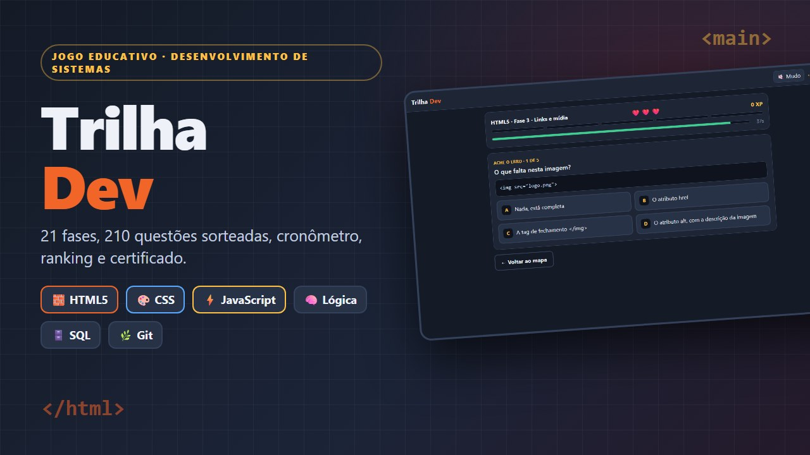
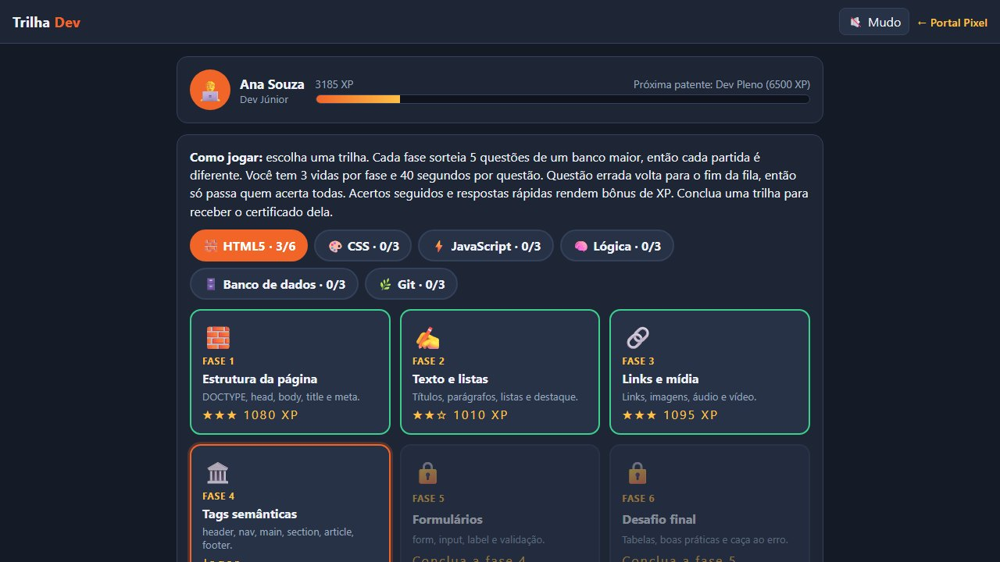
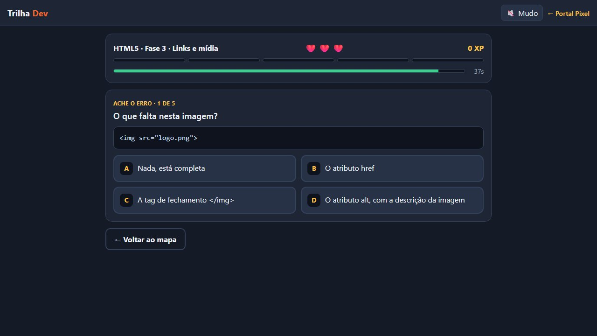
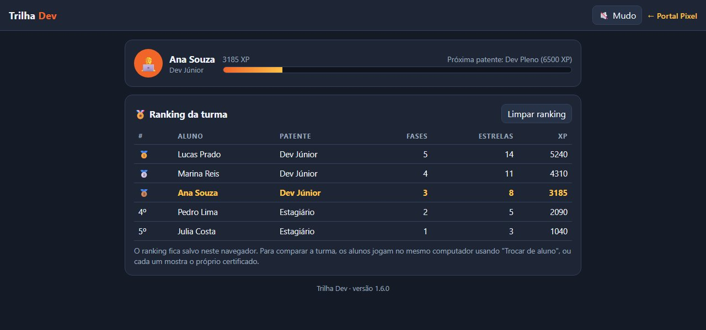
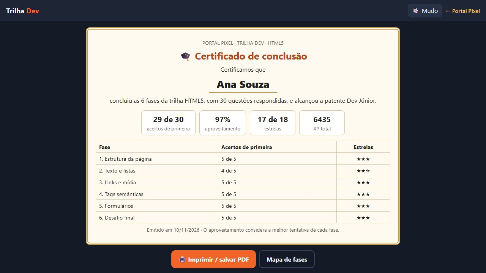
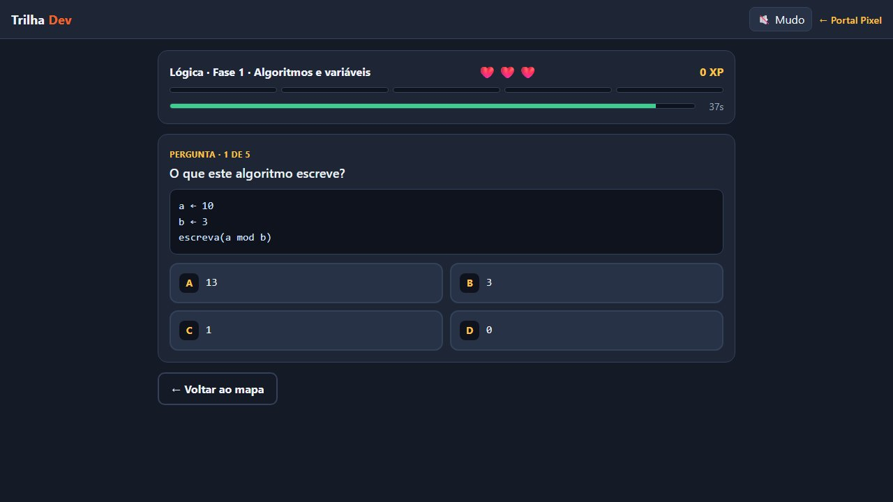
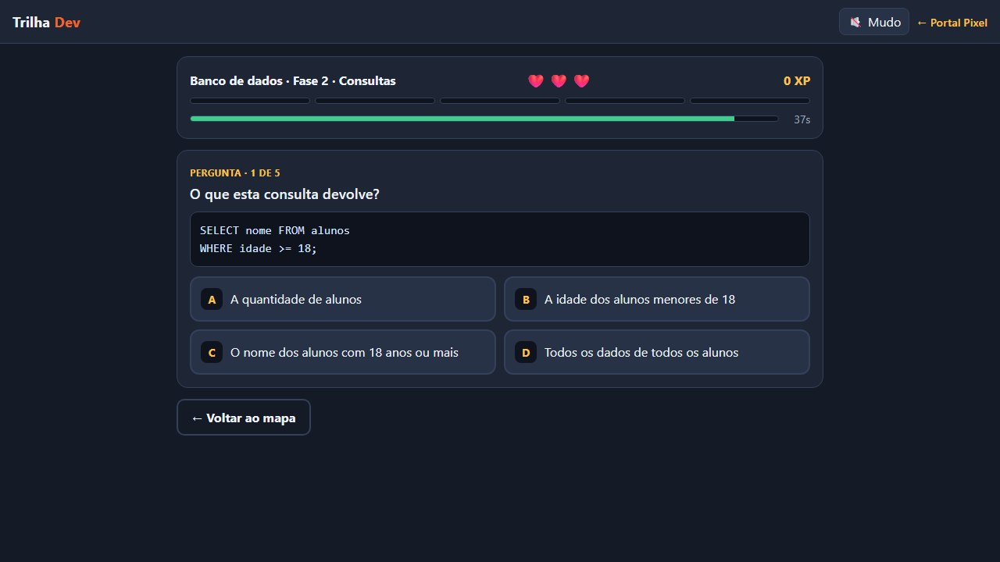
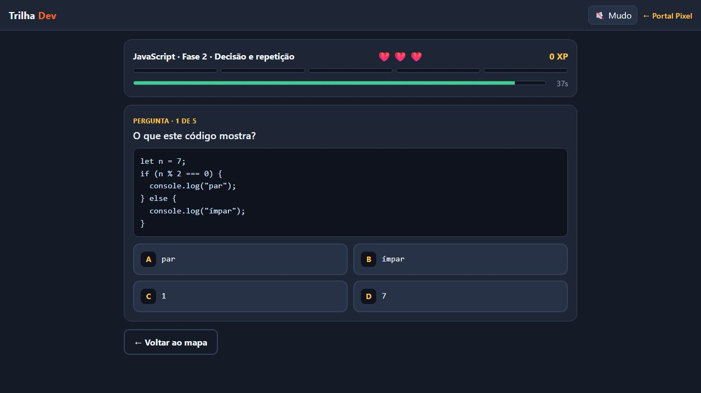
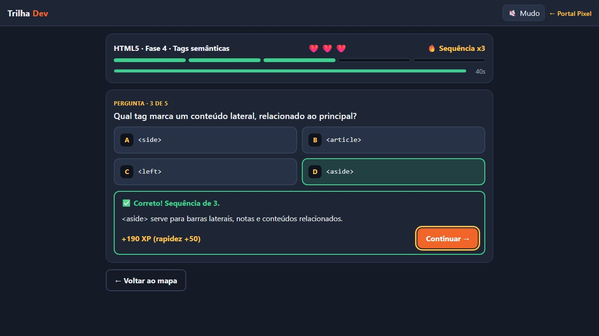
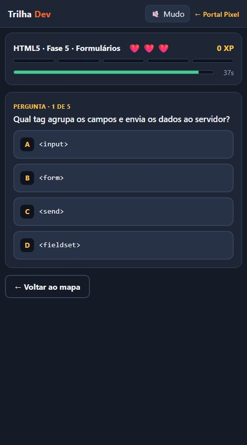

Versão do jogo: 1.6.0 · Atualizado em 10/11/2026 · Autor: Prof. Heberson Miliano
Este documento descreve o jogo Trilha Dev, que até a versão 1.5 se chamava Missão HTML5: para quem ele é, como funciona, o que ensina, como foi construído e como evoluir. Ele acompanha o jogo publicado no Portal Pixel e deve ser atualizado a cada versão.

Visão geral
| Item | Descrição |
|---|---|
| Título | Trilha Dev (antes Missão HTML5) |
| Gênero | Educativo, jogo de perguntas (quiz) com progressão por fases |
| Plataforma | Navegador, no computador e no celular |
| Público | Alunos do curso técnico em Desenvolvimento de Sistemas |
| Jogadores | 1 por vez; vários alunos podem se revezar no mesmo computador |
| Duração | Cerca de 3 a 5 minutos por fase |
| Tecnologia | HTML5, CSS e JavaScript puros, em um único arquivo, sem bibliotecas |
| Endereço | jogo.html?id=missao-html5 no Portal Pixel (o endereço mantém o nome antigo) |
| Código | jogos/missao-html5/index.html no repositório portal-jogos |
Resumo em uma frase: o aluno avança por 21 fases, em seis trilhas que vão de HTML5 a Git, respondendo questões sorteadas, com vidas, cronômetro, XP, patentes, ranking e certificado.
Objetivos pedagógicos
- Revisar o conteúdo do curso: lógica de programação, HTML5, CSS, JavaScript, banco de dados e Git.
- Treinar a leitura de código, com questões de completar o código, achar o erro e prever o resultado.
- Corrigir o erro no momento em que ele acontece: toda resposta, certa ou errada, mostra uma explicação curta.
- Garantir que o aluno veja todo o conteúdo da fase: a questão errada volta para o fim da fila e a fase só termina quando todas forem acertadas.
- Dar ao professor um registro simples do desempenho: o certificado mostra os acertos de primeira por fase e o aproveitamento.
Público e uso em sala
- Revisão antes da prova: cada aluno joga a trilha do conteúdo estudado e mostra o certificado.
- Competição no laboratório: os alunos se revezam no mesmo computador com o botão Trocar de aluno, e o ranking mostra a classificação.
- Atividade para casa: o jogo funciona no celular e guarda o progresso no navegador do aluno.
- Alunos que leem mais devagar: o professor pode desligar o cronômetro no mapa de fases. Sem cronômetro não há bônus de rapidez, e o restante do jogo é igual.
Ciclo de jogo
- O aluno digita o nome. Sem nome, as fases ficam bloqueadas.
- No mapa, escolhe uma das seis trilhas e a fase liberada.
- A fase sorteia 5 questões do banco e embaralha as alternativas.
- O aluno responde. A tela mostra a alternativa certa e a explicação.
- Acerto: ganha XP e a questão sai da fila. Erro ou tempo esgotado: perde uma vida e a questão volta para o fim da fila.
- Fila vazia: fase concluída, com estrelas, XP e a próxima fase liberada. Sem vidas: a fase recomeça com um novo sorteio.
- Trilha concluída: o certificado da trilha fica disponível.

Mecânicas
Vidas e fila de questões
Cada fase começa com 3 vidas. Um erro, ou o fim do tempo, tira uma vida e manda a questão para o fim da fila. Com isso o aluno pode errar até 2 vezes por fase; no terceiro erro a fase termina e pode ser repetida.
Sorteio
Cada fase tem um banco de 10 questões e sorteia 5 por partida. A ordem das questões e das alternativas muda a cada vez. Isso dificulta decorar a posição das respostas e copiar do colega ao lado.
Cronômetro
Cada questão tem 40 segundos. Uma barra mostra o tempo, fica vermelha nos últimos 10 segundos e emite um som nos últimos 5. O cronômetro é ligado por padrão e pode ser desligado no mapa de fases.

Pontuação (XP)
| Origem | XP |
|---|---|
| Acerto | 100 |
| Sequência de acertos | +20 para cada acerto seguido anterior, até +100 |
| Rapidez (com cronômetro) | até +50, proporcional ao tempo que sobrou |
| Vidas restantes ao concluir a fase | +50 por vida |
O máximo por fase é 1.100 XP com cronômetro e 850 XP sem. O jogo guarda o melhor resultado de cada fase, então repetir uma fase só aumenta o XP quando o aluno supera o próprio recorde.
Estrelas
| Acertos de primeira na fase | Estrelas |
|---|---|
| 5 de 5 | 3 |
| 4 de 5 | 2 |
| 3 ou menos | 1 |
Patentes
O XP somado das seis trilhas define a patente do aluno. O máximo possível é 23.100 XP com cronômetro e 17.850 XP sem.
| Patente | XP necessário |
|---|---|
| Estagiário | 0 |
| Dev Júnior | 2.500 |
| Dev Pleno | 6.500 |
| Dev Sênior | 11.000 |
| Arquiteto Web | 16.000 |
Concluir bem a trilha de HTML5 leva perto de Dev Pleno. Para chegar a Arquiteto Web é preciso jogar bem quase todas as trilhas. Na versão 1.5 os níveis passaram a pedir mais XP, então um aluno que já tinha jogado pode aparecer com uma patente menor até avançar nas trilhas novas.
Ranking da turma
Ao concluir uma fase, o aluno entra no ranking, que mostra os 10 melhores por XP, com patente, fases concluídas e estrelas. O botão Trocar de aluno apaga o progresso do aluno atual e mantém a pontuação dele no ranking. O botão Limpar ranking zera a tabela.
O ranking fica salvo no navegador. Ele reúne os alunos que jogaram no mesmo computador, não a turma inteira em computadores diferentes.

Certificado
Cada trilha concluída libera um certificado com o nome do aluno, a patente, os acertos de primeira por fase, o aproveitamento e a data. O botão Imprimir abre a impressão do navegador, que também salva em PDF. O aproveitamento considera a melhor tentativa de cada fase.

Conteúdo
Trilhas e fases
| Trilha | Fase | Conteúdo | Banco |
|---|---|---|---|
| HTML5 | 1. Estrutura da página | DOCTYPE, html, head, body, title, meta charset, viewport, lang | 10 |
| HTML5 | 2. Texto e listas | Títulos, parágrafo, br, hr, ul, ol, li, strong, em | 10 |
| HTML5 | 3. Links e mídia | a, href, target, img, src, alt, audio, video, caminho relativo | 10 |
| HTML5 | 4. Tags semânticas | header, nav, main, section, article, aside, footer, figure | 10 |
| HTML5 | 5. Formulários | form, input e seus tipos, label, required, placeholder, select, textarea | 10 |
| HTML5 | 6. Desafio final | Tabelas, link de CSS, script, comentário, aninhamento, caça ao erro | 10 |
| CSS | 1. Seletores e sintaxe | Regra, seletor de tag, classe e id, descendência, color, background-color | 10 |
| CSS | 2. Texto e modelo de caixa | font-family, font-size, font-weight, text-align, padding, border, margin | 10 |
| CSS | 3. Layout e responsivo | Flexbox, grid, gap, media query, rem, :hover, especificidade | 10 |
| JavaScript | 1. Variáveis e tipos | let, const, string, number, boolean, typeof, console.log | 10 |
| JavaScript | 2. Decisão e repetição | if e else, operadores de comparação e lógicos, for, while | 10 |
| JavaScript | 3. Funções, listas e página | function, return, arrays, for...of, getElementById, eventos | 10 |
| Lógica | 1. Algoritmos e variáveis | Algoritmo, variável, tipos, atribuição, leia e escreva | 10 |
| Lógica | 2. Decisão | se e senão, operadores relacionais e lógicos, escolha | 10 |
| Lógica | 3. Repetição e vetores | para, enquanto, repita, contador, acumulador, vetor | 10 |
| Banco de dados | 1. Conceitos | Tabela, registro, campo, chave primária e estrangeira, tipos | 10 |
| Banco de dados | 2. Consultas | SELECT, FROM, WHERE, ORDER BY, COUNT, LIKE, DISTINCT | 10 |
| Banco de dados | 3. Alterar e relacionar | INSERT, UPDATE, DELETE, CREATE e DROP TABLE, JOIN, 1:N | 10 |
| Git | 1. Primeiros passos | init, status, add, commit, log | 10 |
| Git | 2. Repositório remoto | clone, push, pull, origin, .gitignore, README | 10 |
| Git | 3. Ramos e equipe | branch, switch, merge, conflito, pull request, fork | 10 |
Total: 6 trilhas, 21 fases e 210 questões.
A trilha de Lógica usa pseudocódigo em português, para não depender de uma linguagem. A de Banco de dados usa SQL.


Tipos de questão
- Pergunta: conceito direto, com quatro alternativas.
- Complete o código: um trecho com uma lacuna.
- Ache o erro: um trecho com um erro para identificar.
- O que este código mostra?: leitura de código, nas trilhas de JavaScript, Lógica e Banco de dados.

Regras de escrita das questões
- Uma única alternativa certa e três erradas plausíveis.
- Enunciado curto, com uma ideia só.
- A explicação diz por que a resposta está certa e, quando ajuda, desfaz a confusão mais comum.
- Código de exemplo com no máximo 6 linhas.
Telas
| Tela | O que mostra |
|---|---|
| Mapa | Perfil com patente e barra de XP, abas das trilhas, fases, cronômetro, ranking |
| Partida | Fase, vidas, sequência, progresso, tempo, pergunta, código, alternativas, explicação |
| Resultado da fase | Estrelas, acertos de primeira, bônus de vidas, XP e recorde |
| Certificado | Nome, patente, aproveitamento e tabela por fase |

No celular, as alternativas ficam em uma coluna e o mapa em duas.

Controles
| Ação | Mouse ou toque | Teclado |
|---|---|---|
| Responder | Clicar na alternativa | A, B, C, D ou 1, 2, 3, 4 |
| Continuar | Botão Continuar | Enter |
| Sair da fase | Botão Voltar ao mapa | Tab até o botão e Enter |
Áudio
Os sons são gerados no navegador com a Web Audio API, sem arquivos: acerto (mais agudo conforme a sequência), erro, aviso dos últimos 5 segundos, fase concluída e derrota. O botão Som no topo liga e desliga, e a escolha fica salva.
Acessibilidade
- Todos os botões funcionam por teclado e têm foco visível.
- Acerto e erro usam cor, ícone e texto, não só a cor.
- O resultado de cada resposta é anunciado para leitores de tela.
- Quem ativou a redução de movimento no sistema não vê o confete nem as animações.
- O cronômetro pode ser desligado.
Arquitetura técnica
O jogo é um arquivo único, jogos/missao-html5/index.html, com HTML, CSS e JavaScript. Não usa bibliotecas, imagens nem servidor.
Formato de uma questão
{ tipo: "Complete o código", // opcional; o padrão é "Pergunta"
t: "Qual atributo informa o destino do link?",
cod: "<a ____=\"https://www.exemplo.com\">Visitar</a>", // opcional
mono: true, // alternativas em fonte de código
op: ["src", "link", "href", "url"],
c: 2, // posição da alternativa certa, a partir de 0
e: "No <a>, o atributo href guarda o endereço de destino." }
Como ampliar o conteúdo
- Nova questão: acrescente um objeto na lista
qda fase. O sorteio já passa a incluí-la. - Nova fase: acrescente
{ icone, titulo, desc, q: [...] }na lista da trilha, com pelo menos 5 questões. - Nova trilha: crie a lista de fases e acrescente
{ id, nome, icone, fases }emTRILHAS.
Os textos entram na página como texto puro, então tags como <p> aparecem escritas e não são interpretadas.
Constantes de ajuste
| Constante | Valor | Significado |
|---|---|---|
POR_FASE |
5 | Questões sorteadas por fase |
VIDAS |
3 | Vidas por fase |
TEMPO |
40 | Segundos por questão |
XP_ACERTO |
100 | XP por acerto |
XP_COMBO |
20 | XP por acerto seguido anterior, até 5 |
XP_TEMPO |
50 | XP máximo de rapidez |
XP_VIDA |
50 | XP por vida restante |
Dados salvos
Tudo fica no localStorage do navegador. Nada é enviado para a internet.
| Chave | Conteúdo |
|---|---|
portalpixel.missao-html5.v1 |
Nome, melhor resultado de cada fase, trilha aberta, som e cronômetro |
portalpixel.missao-html5.ranking |
Até 50 alunos com nome, XP, estrelas, fases e data |
O progresso da versão 1.0, que só tinha HTML5, é convertido ao abrir o jogo.
Integração com o Portal Pixel
| Arquivo | Papel |
|---|---|
jogos.js |
Entrada do catálogo: textos, versão, capa, guia e o histórico em novidades |
assets/missao-html5.js e .css |
Apresentação com capturas, trilhas e atualizações |
assets/missao-html5/ |
Capa e capturas reais do jogo |
guias/missao-html5.md |
Este documento, a fonte da página guias/missao-html5.html |
j/missao-html5/ e previas/missao-html5.jpg |
Link curto e imagem para compartilhar |
Para publicar uma versão nova: altere o jogo, aumente VERSAO no jogo e versao no catálogo, acrescente a versão no início de novidades, atualize este documento e gere a página do guia de novo.
Testes realizados na versão 1.6.0
- Conferência automática das 210 questões: 10 por fase, 4 alternativas diferentes, 1 certa e explicação preenchida.
- Quatro partidas automáticas completas em cada uma das 21 fases, que passaram por 199 das 210 questões.
- Derrota por falta de vidas e nova tentativa.
- Fim do tempo contando como erro.
- Cronômetro desligado: sem barra e sem bônus de rapidez.
- Conversão do progresso salvo pela versão 1.0.
- Ranking com dois alunos e Trocar de aluno.
- Certificado das seis trilhas.
- Página do jogo e vitrine da página inicial no portal.
Ainda não testado: uso em um celular físico e impressão do certificado em papel.
Histórico de versões
| Versão | Data | Mudanças |
|---|---|---|
| 1.6 | 10/11/2026 | Novo nome: Trilha Dev. Endereço, pastas e progresso salvo continuam os mesmos |
| 1.5 | 10/11/2026 | Trilhas de Lógica, Banco de dados e Git; bancos de CSS e JavaScript com 10 questões; patentes recalculadas |
| 1.4 | 10/11/2026 | Trilhas de CSS e JavaScript, abas, um certificado por trilha, patentes recalculadas |
| 1.3 | 10/11/2026 | Ranking da turma e botão Trocar de aluno |
| 1.2 | 10/11/2026 | Banco de HTML5 com 10 questões por fase e sorteio de 5 |
| 1.1 | 10/11/2026 | Cronômetro de 40 segundos com bônus de rapidez, que pode ser desligado |
| 1.0 | 10/11/2026 | Lançamento: 6 fases e 30 questões de HTML5, vidas, sequência, XP, patentes e certificado |
Limitações e próximos passos
- Ranking entre computadores: o ranking é local. Um ranking da turma inteira exige um serviço externo para guardar as pontuações, com conta e regras de privacidade para dados de alunos.
- Relatório para o professor: exportar os resultados do ranking em uma planilha.
- Novas trilhas: back-end, testes de software e acessibilidade seguem o mesmo formato.
- Bancos maiores: com mais de 10 questões por fase, o sorteio repete menos.